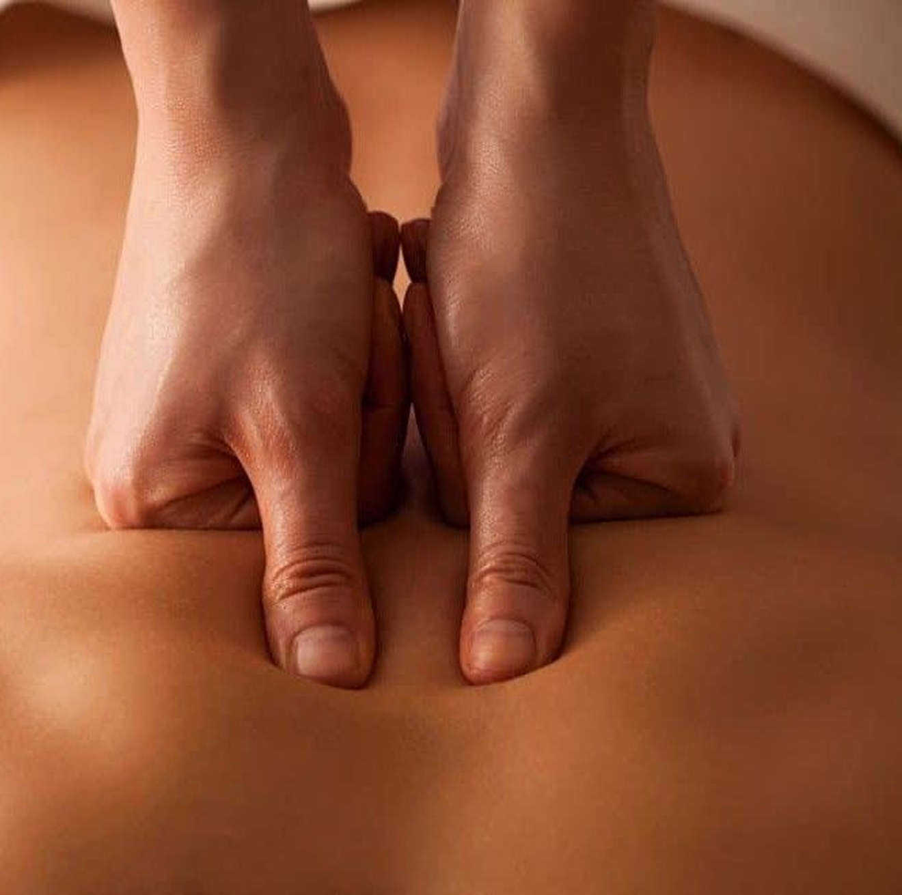
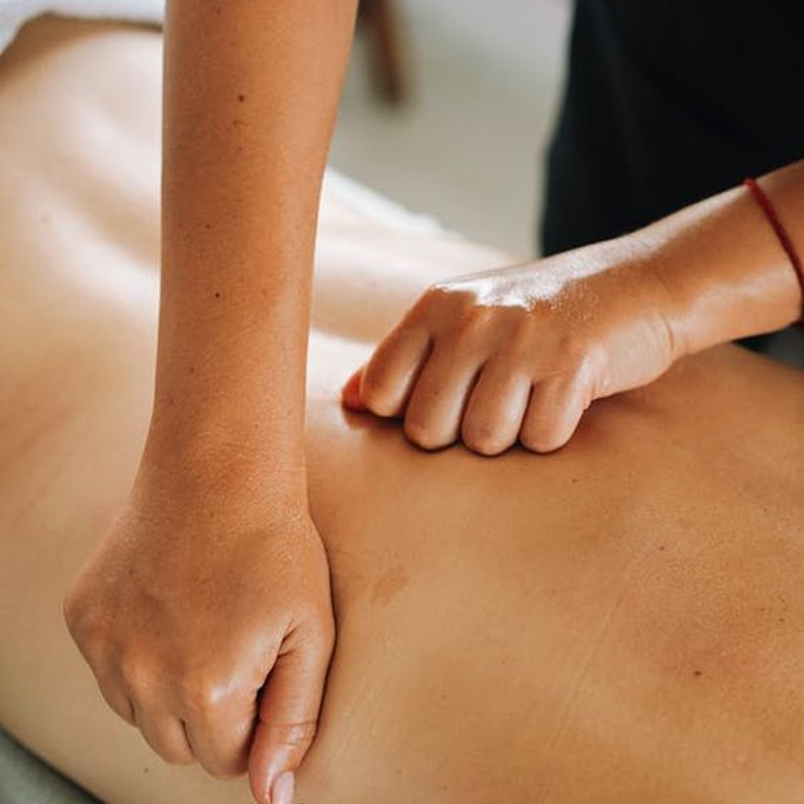

Триггерные точки — невидимые узлы боли
Многие люди часто сталкиваются с ощущением «узла» в мышцах, который болит при нажатии или отдает болью в другие части тела. В медицине и массажной терапии это состояние называется миофасциальным триггерным пунктом.
Что такое триггерная точка
Триггерная точка — это локальный участок гипертонуса (сжатия) мышечного волокна. В этой зоне нарушается нормальный кровоток, возникает локальная ишемия (нехватка кислорода) и накапливаются продукты метаболизма, которые раздражают нервные окончания.
В отличие от обычной мышечной боли после тренировки, триггерная точка:
Ощущается как плотное, болезненное уплотнение под кожей.
Не проходит после обычного отдыха.
Может вызывать отраженную боль (когда болит одно место, а «стреляет» в другое).

Механизм отраженной боли
Одной из главных особенностей триггеров является их способность «обманывать» мозг. Из-за специфического раздражения нервных путей мозг получает сигнал о боли в области, которая физически не повреждена.
Триггеры в трапециевидной мышце (шея и плечи) — часто отдают в висок, глазницу или затылок, имитируя головную боль напряжения.
Триггеры в мышцах спины — могут «простреливать» в поясницу или бедро.
Триггеры в мышцах груди — могут имитировать боли в области сердца.

Основные причины появления
Триггеры не возникают на пустом месте. Чаще всего их провоцируют следующие факторы.
1. Статическая нагрузка
Длительное сидение за компьютером, «текстовая шея» (наклон головы к смартфону) или неудобная поза во время сна заставляют одни мышцы постоянно быть в напряжении.
2. Микротравмы и перегрузки
Резкие движения, поднятие тяжестей или повторяющиеся монотонные действия (например, работа мышц предплечья при работе с мышью).
3. Психосоматика и стресс
Хронический стресс заставляет нас неосознанно сжимать челюсти или поднимать плечи к ушам, что создает постоянный мышечный зажим.
4. Дефициты в организме
Нехватка магния, кальция или нарушение водно-солевого баланса делает мышечную ткань более склонной к спазмам.
Как с этим бороться
Просто «размять» боль недостаточно — нужно работать с причиной.
Профессиональный массаж
Специалист использует техники миофасциального релиза или глубокого надавливания. Цель — «разжать» узел, восстановить кровоток и расслабить волокно.
Самостоятельная работа
Использование массажных мячей (теннисных или специальных роллов) помогает точечно воздействовать на триггеры в домашних условиях. Важно не давить слишком резко, чтобы не вызвать защитный спазм.
Коррекция образа жизни
Эргономика рабочего места.
Регулярная растяжка.
Контроль уровня стресса и потребления микроэлементов.
Важно: Если вы чувствуете сильную, острую или постоянную боль, не пытайтесь лечить её самостоятельно — обратитесь к врачу или сертифицированному специалисту по реабилитации.